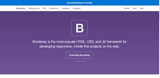

It determines the, 'look' and style of the page. When it calls a CSS (Cascading Style Sheet)
file this can be a powerful way to control the style for a number of webpages - so that each webpage of a site looks the same.
HTML
90%
PHP is a server scripting language, and a powerful tool for making dynamic and interactive Web pages.
PHP
80%

Java is a programming language that I can use to create applications on your computer.
Java
75%

A framework is not absolutely necessary: it is “just” one of the tools that is available to help me develop better and faster!
Better, because a framework provides me with the certainty that I am are developing an application that is in full compliance with the business rules,
that is structured, and that is both maintainable and upgradable.
Faster, because it allows developers to save time by re-using generic modules in order to focus on other areas. Without, however, ever being tied to the framework itself.
Frameworks
90%